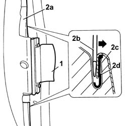
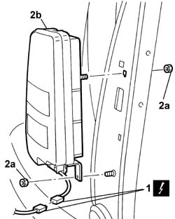
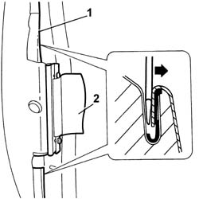

5580C44 SIDE BAG MODULE (one), left or right - R.R.
- Path
- Procedures > 55 ELECTRICAL EQUIPMENT > 5580 SPECIAL ACCESSORIES > 5580C AIR BAG SYSTEM > 5580C44 SIDE BAG MODULE (one), left or right - R.R.
- Kind
- repair procedure (removal / refitting; the operation number is the code)
- Applies to
- all engines; all production periods
- Interactive page
- https://sloeber94.github.io/elrnDB-lThss/en/#/79707
Applies to: all engines; all production periods
Applies to: all engines; all production periods
 Removing
Removing
 Refitting
Refitting- Disconnect the negative battery terminal.
See in Op. 7045A10 FRONT SEAT (one) left or right - R.R.
See in Op. 7045J10 switch unit for movement of one front seat, l/h or r/h - r+r for check
See in Op. 7045A42 Front seat GUARD (one), left or right - R.R.
- [all the elements]
See in Op. 7045A98 Front seat rear pouch panel, left or right - R.R.
- [7045A98]
1. Open the side Air Bag module retaining band.
2. Release the trim (2a); use an appropriate size screwdriver (2b) to open the duct (2c) and release the edge (2d) of the trim.

Applies to: all engines; all production periods
1. Disconnect the electrical connector for the side Air Bag module and release the electrical wiring from the retaining springs.
 | Description | Connector |
|---|---|---|
1 | Driver's sidebag | Q030 |
| Description | Connector |
|---|---|---|
1 | Passenger sidebag | Q031 |
2. Undo the fixing nuts (2a) and remove the side Air Bag module (2b).

Applies to: all engines; all production periods
- Place the Air Bag module in the special cupboard, resting it on a free surface with the flat surface facing upwards.
Applies to: all engines; all production periods
Refitting
Removing- If a new Air Bag module is being fitted, position the labels.
- Remove the detachable part of the adhesive label for the new module and place it in the special file containing the vehicle details (model, registration date, chassis number) and the serial number of the old module. The file should be kept for future checks.
- A new adhesive label comes together with the module and should be stuck on top of the existing one. Beforehand, however, it should be perforated at the month and 10 years after the date when the module is fitted (e.g. 2009 for 1999).
- Visually inspect that the seat frame is not distorted or cracked.
- Check that the slots in the lower part of the backrest are not distorted.
- Check that the welding and the rivets sealing the joints between the backrest and the cushion are intact.
- Check for possible torsional distortion of the backrest by measuring the backrest frame diagonals.
- Check that the measurements are the same and that the intersection of the diagonals is at the centre of the backrest.
- Carry out all the movements for the seat functions checking that there is no sticking or noise.
- Fit the side Air Bag module in the housing and tighten the fixing nuts to torque.
 | Value - daNm | Fastening | Component | Ø |
|---|---|---|---|---|
. | 0,4 | Nut | MECH. MODULE COMPLETE SIDE BAG | - |
- Connect the electrical connector for the side Air Bag module and secure the electrical wiring to the retaining springs.
| Description | Connector |
|---|---|---|
. | Driver's sidebag | Q030 |
| Description | Connector |
|---|---|---|
. | Passenger sidebag | Q031 |
1. Fit the cover surround.
- Hit the channel with a rubber hammer.
2. Close the side Air Bag module retaining band.

Applies to: all engines; all production periods
See in Op. 7045A98 Front seat rear pouch panel, left or right - R.R.
- [7045A98]
See in Op. 7045A42 Front seat GUARD (one), left or right - R.R.
- [all the elements]
See in Op. 7045J10 switch unit for movement of one front seat, l/h or r/h - r+r for check
See in Op. 7045A10 FRONT SEAT (one) left or right - R.R.
- Connect the negative battery terminal.
Topics linked from this page (4)
- 7045A10 FRONT SEAT (one) left or right - R.R.
- 7045A42 Front seat GUARD (one), left or right - R.R.
- 7045A98 Front seat rear pouch panel, left or right - R.R.
- 7045J10 switch unit for movement of one front seat, l/h or r/h - r+r for check